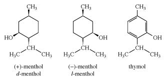

Menthol, also called peppermint camphor, terpene alcohol with a strong minty, cooling odour and taste. It is obtained from peppermint oil or is produced synthetically by hydrogenation of thymol. Menthol is used medicinally in ointments, cough drops, and nasal inhalers. It is also used as flavouring in foods, cigarettes, liqueurs, cosmetics, and perfumes.
The menthol molecule can exist as one of two enantiomers (mirror-image isomers). The naturally occurring material is the levorotatory form (the compound that rotates the plane of polarized light to the left), called (-)-menthol (or l-menthol). Synthetic menthol is racemic, consisting of equal amounts (-)-menthol and (+)-menthol (or d-menthol), the latter being the isomer that rotates the plane of polarized light to the right.
